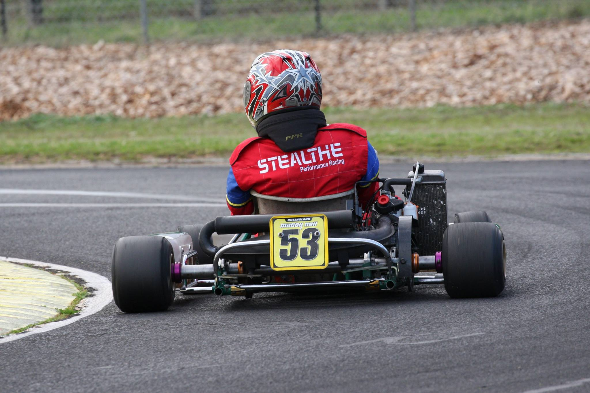

About
Bio
Matthew grew up on the Gold Coast. When he was a a kid, he wanted to play Rugby League for the Brisbane Broncos. Watching sport with his dad, he quickly shared his dad's passion for V8 Supercars and became a Holden man. He discovered other forms of racing as well and fell in love with Formula 1, watching every race since the 2008 season until now. At age 8, after one of Matthew's friends was bought a Go Kart, he realized this was the way to achieve his dream of becoming a Formula 1 Driver. 6 years later, at 14 years old, after saving for many years, his Dad bought him an old Tony Kart. Matthew paid half as was the deal. Even though a minor dream of acquiring a kart happened at 14, realistically, the family didn't have the money or the right friends to make it to top level racing. So he was studying at school to become a mechanical engineer.
After a year at University, Matthew decided mechanical engineering wasn't for him. After years of playing around with different things, he decided to follow his interest of computers and code. Exploring code some more, turned into a passion and he decided he wanted to become a Software Engineer. Using his grades from his last uni degree, he was accepted at Charles Sturt University to do a Bachelor of Computer Science. In his final year of his degree, he has decided he wants to be a software, mobile and website developer. He hopes that one day he can still work in the motorsport industry with software.
